Roman Garden Design
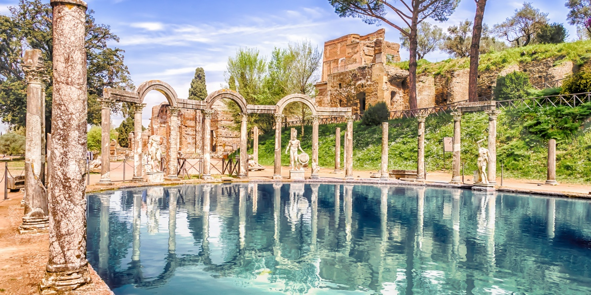
Roman Garden Design
Roman gardens were designed as an extension of architecture and urban life. Rather than simply allowing nature to grow freely, Roman gardeners imposed order through walls, axes, clipped plants, sculpture, water and architectural structures. The gardens of wealthy Roman villas could function almost like an outdoor theatre. Buildings, colonnades, pools, fountains, trees and sculpture were carefully positioned to create views, processions, shade and dramatic contrasts. Water was particularly important. Roman engineering made it possible to transport water over considerable distances through aqueducts and distribute it through fountains, pools, baths and ornamental gardens. Water therefore became both a practical resource and a symbol of wealth and technological achievement. The Roman garden was neither entirely urban nor entirely rural. It created an idealized countryside within an architectural setting—a cultivated landscape where the owner could experience nature while maintaining complete control over its appearance.
Trees
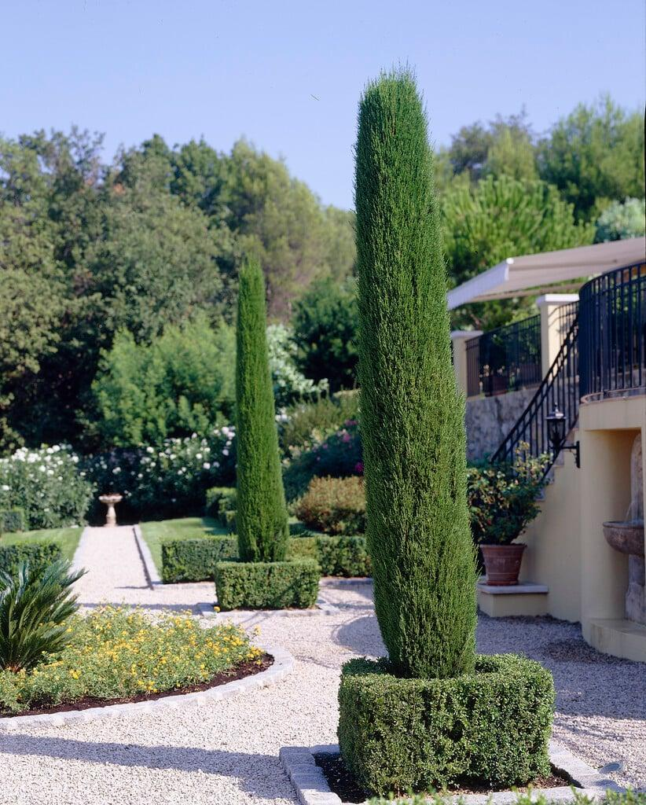
Trees provided shade, fruit, fragrance and structure within Roman gardens. They were not simply background vegetation; they helped define spaces and frame architectural views.
Citrus
Citrus trees are strongly associated with later Italian and Mediterranean garden traditions, although the common citrus varieties we recognize today should not all be attributed directly to ancient Roman gardens. Figs, olives and grapes were much more firmly established in Roman horticulture. In an Italian-inspired garden today, lemons, limes, oranges and mandarins can provide the lush Mediterranean character associated with Italian villas. In colder regions such as the Okanagan, citrus can also be grown in containers and protected during winter.
Fig Trees
Fig trees have a particularly strong connection to the ancient Mediterranean world. Their broad foliage provides shade, while their fruit makes them both ornamental and productive. A mature fig can become a major focal point within a courtyard or villa garden.
Tall, Narrow Evergreens
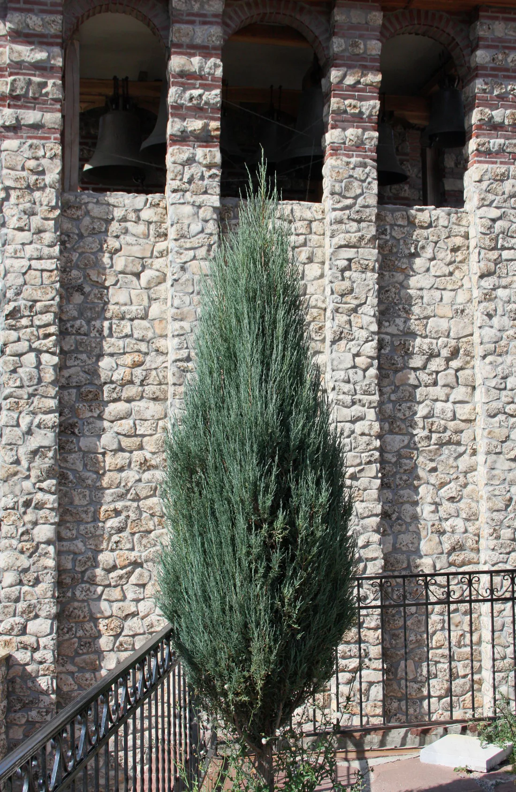
Vertical evergreen trees create the strong architectural lines characteristic of Mediterranean landscapes. In an Okanagan adaptation, narrow forms such as Skyrocket juniper can be particularly useful. Their columnar habit can suggest the visual effect of Italian cypress while providing a plant much better adapted to a colder continental climate. The narrow silhouette is especially effective when repeated along an avenue, beside a wall or around a formal garden.
Vines
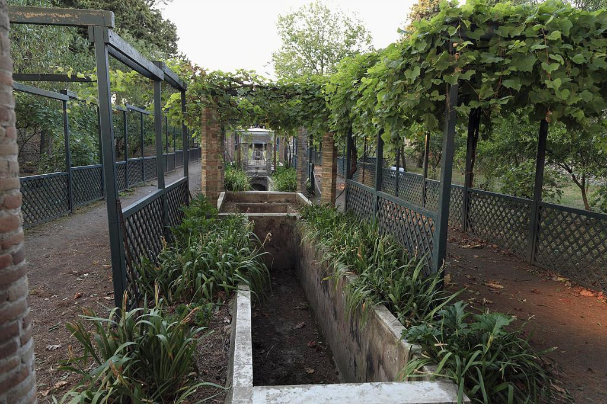
The grapevine was an important part of Roman life, agriculture and culture. Vines could be cultivated for wine production, but they were also valuable as ornamental plants. Trained over wooden frameworks, pergolas and arbors, grapevines produced a living canopy that provided welcome shade during the hot Mediterranean summer. This dual purpose—beauty and productivity—is an important characteristic of the Roman garden. The vine-covered pergola also created a processional experience. Visitors could move from bright, open areas into the cooler shade beneath the vines before emerging into another garden space. Italy has an extraordinary diversity of grape varieties today, although the modern figure of more than 6,000 varieties includes a broad range of cultivated and documented types and should not be interpreted as the number existing in ancient Rome. For a contemporary garden, grapevines remain an excellent choice for pergolas, especially where the garden is intended to combine ornamental and edible planting.
There are over 6,000 species of grape varietles in Italy today, the vines were used to for shaded pergolas, and wine making.
Atrium
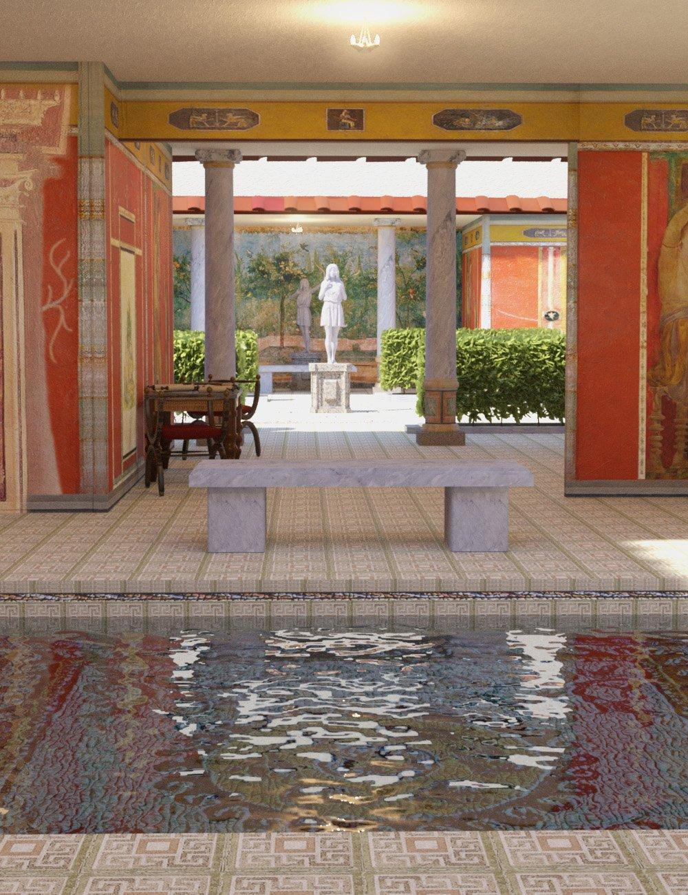
The atrium was the central space of the traditional Roman house. Although primarily an architectural space rather than a garden in the modern sense, the atrium created an important relationship between house, sky, water and planting. An opening in the roof, known as the compluvium, allowed sunlight and rainwater to enter. Beneath it was the impluvium, a shallow basin designed to collect rainwater. This created a striking combination of architecture and water. Plants, sculpture and decorative elements could be positioned around the basin, turning the atrium into a carefully framed interior landscape. The principle remains highly relevant today: a small courtyard can become a garden focal point by concentrating light, water, planting and architecture in one space.
Peristyle
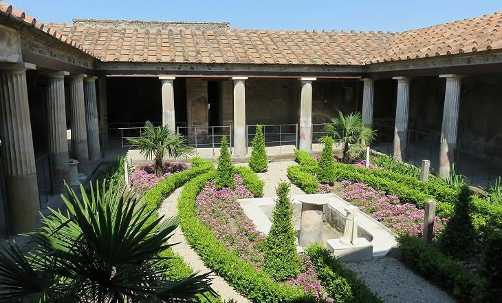
The peristyle garden was one of the defining features of the Roman villa. A peristyle consisted of a garden or courtyard surrounded by a covered walkway supported by columns. The colonnade created a transition between the interior of the house and the garden beyond. This arrangement produced several layers of experience: House → Colonnade → Garden → Landscape The columns provided shade and repetition, while the garden supplied greenery, fragrance, sculpture and water. Roman peristyles could contain: Clipped shrubs, Flowering plants, Fruit trees, Fountains, Pools, Statues, Pathways, Decorative stonework, Small architectural features The contrast between hard architectural lines and lush vegetation was fundamental to the design. For a modern garden, the same principle can be recreated with a pergola, covered walkway, columns or a series of repeated structural posts surrounding a courtyard.
Villa Gardens
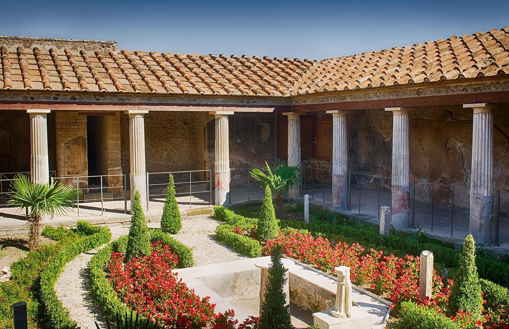
The Roman villa garden extended the domestic environment into the surrounding landscape. A wealthy villa could contain a succession of different garden experiences rather than a single planting area. Formal courtyards might transition into orchards, vineyards, shaded walks, terraces and open countryside. The villa therefore became a designed landscape, with architecture organizing the views and movement through the property. Gardens were places for: Entertaining, Dining, Walking, Conversation, Reading, Rest, Displaying wealth, Appreciating art and architecture The garden was also a place where the owner could demonstrate sophistication. Exotic plants, sculpture, fountains and carefully maintained vegetation communicated access to wealth, labour and resources.
Imperial Gardens
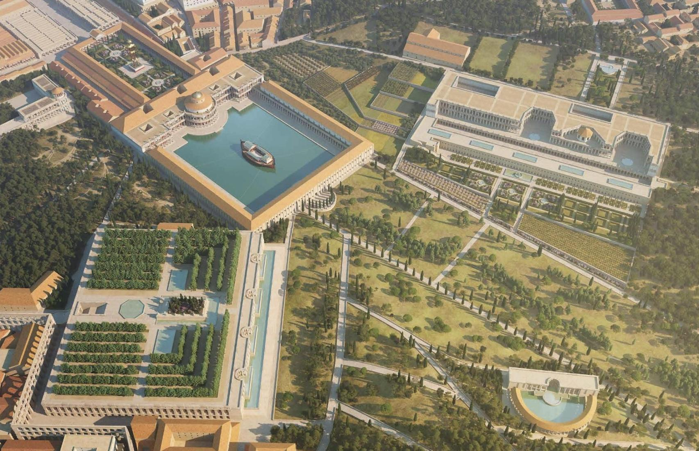
At the imperial level, Roman garden design became extraordinarily ambitious. The gardens associated with emperors were not simply private retreats; they were statements of power. Two exceptional examples are Hadrian's Villa at Tivoli and The Domus Aurea of Nero .
Aurea
The Aurea, or “Golden House,” was the enormous palace complex developed under Emperor Nero. Its gardens and architectural spaces demonstrated the scale and extravagance possible when imperial resources were devoted to landscape.
Hadrian's Villa
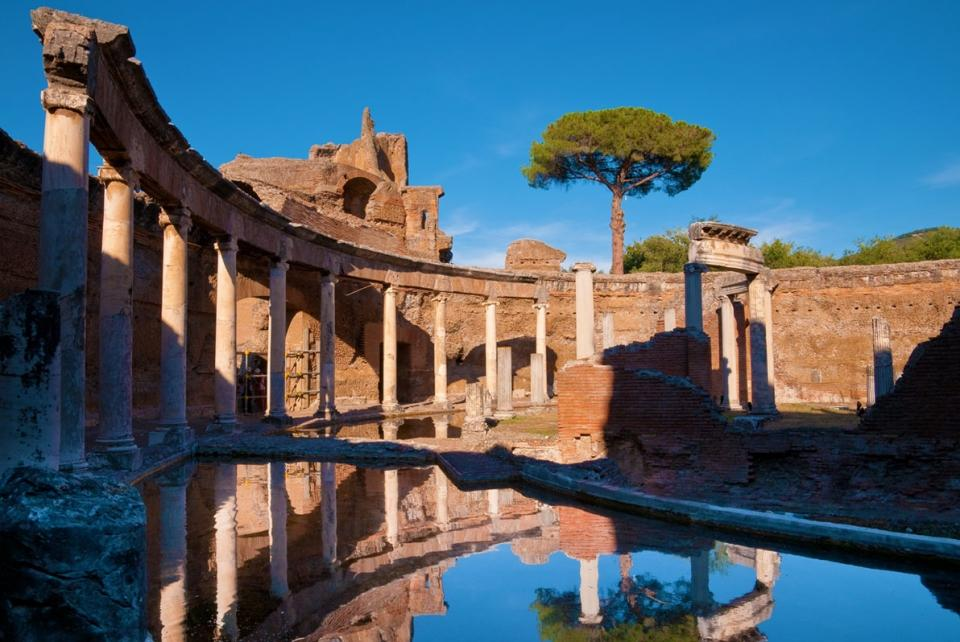
Hadrian's Villa at Tivoli is an extraordinary example of Roman landscape and architectural planning. The complex incorporated pools, courtyards, gardens, colonnades, sculpture and numerous architectural structures. Its famous Canopus demonstrates the Roman fascination with water, procession, architecture and spectacle. The gardens were designed to create changing experiences as visitors moved through the estate. One view would reveal a pool; another a colonnade; another a sculpture or distant landscape. This idea of the garden as a sequence of theatrical experiences is one of the most enduring contributions of Roman design.
The Roman Garden as Theatre
Roman gardens celebrated art, architecture and controlled nature. Rather than trying to reproduce the wilderness, the Roman approach transformed nature into a carefully composed setting.
Architecture
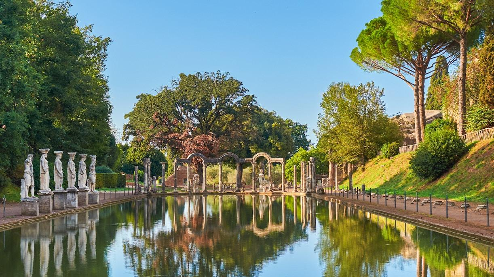
Columns, walls, pavilions and villas established the framework.
Water
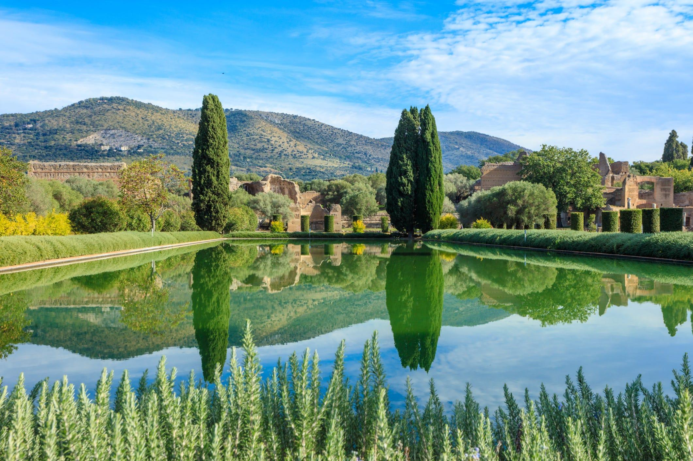
Pools, fountains, channels and basins introduced movement, reflection and sound.
Vegetation
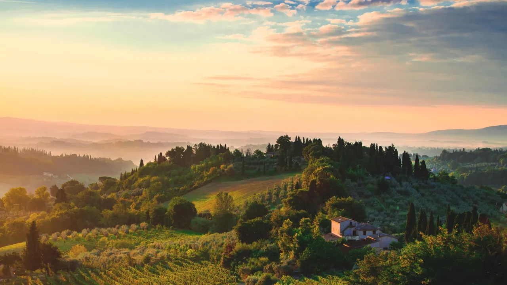
Trees, vines, hedges and topiary provided living architecture.
Sculpture
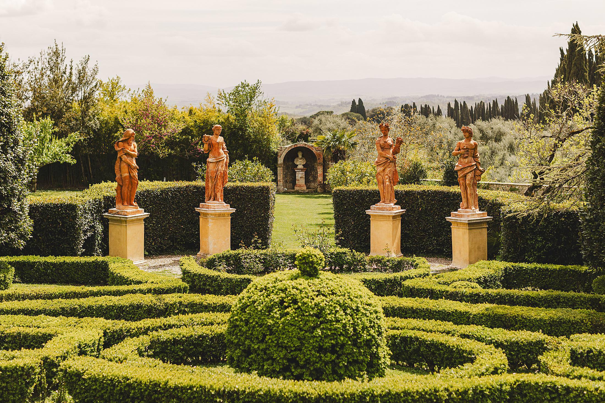
Statues and ornamental objects transformed the garden into an outdoor gallery.
Character of the Roman Garden
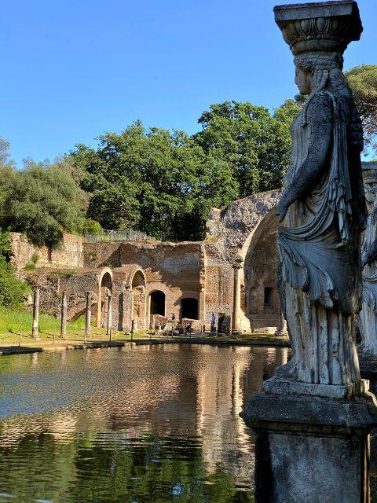
The Roman garden can therefore be understood as an urban countryside—a cultivated version of nature contained within an architectural world. Its principal characteristics are: Atriums — intimate interior courtyards Peristyles — gardens surrounded by columns Villas — architecture integrated with landscape Vines — productive and ornamental shade Fruit trees — beauty combined with food production Evergreens — permanent architectural structure Water — fountains, pools and reflective surfaces Sculpture — art integrated into planting Topiary — controlled vegetation Colonnades — shade, rhythm and procession Symmetry and axes— visual organization Views — carefully framed glimpses of the landscape The Roman contribution to garden design was the idea that nature could be composed like architecture. A garden could be entered, experienced and admired like a work of art, with each space revealing another view, sound, texture or architectural feature. For an Okanagan interpretation, this makes the Roman style particularly interesting: **stone, water, evergreen structure, grapevines, fruit trees, courtyards, columns and formal pathways** can all be adapted to the regional climate while retaining the spirit of the ancient Roman villa.